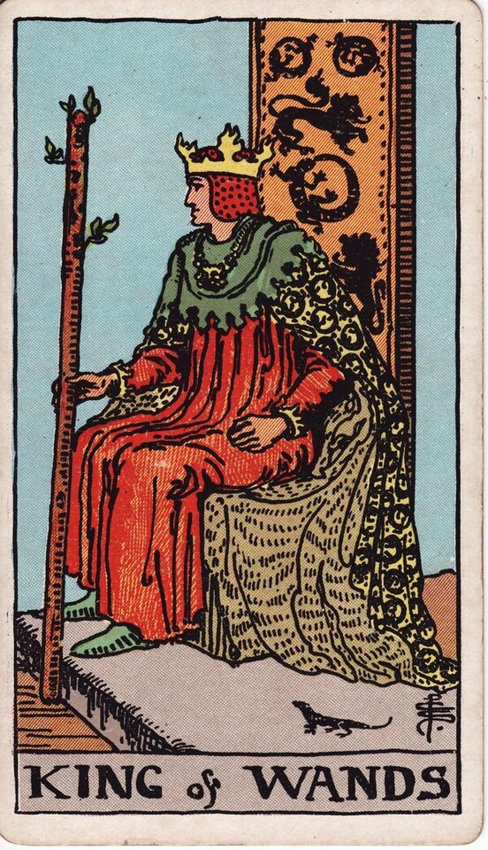

Minor Arcana · Suit of Wands
King of Wands Tarot Card Meaning
The King of Wands is fire with a crown — visionary, bold, and built to lead. Want to know what it means in your spread? Every reader on our line is hand-vetted — connect in under 60 seconds, $1 for your first minute, hang up anytime.
- Hand-vetted readers
- Available 24/7
- Hang up anytime

King of Wands — What It Shows
The King sits on a throne decorated with lions and salamanders, holding a flowering wand, a small salamander at his feet. He's turned slightly, restless even while seated — a leader who would rather be doing. He has mastered the suit's fire outwardly: not just passionate like the Knight, but able to direct passion, people, and vision toward something that lasts.
King of Wands Upright Meaning
Upright, the King of Wands is visionary leadership and bold authority. Big-picture thinking, charisma, decisiveness, and the confidence to take others with you. As a quality to embody: lead, set the vision, and act on it — you have the authority you've been hesitating to claim.
King of Wands Reversed Meaning
Reversed, the leadership sours. Arrogance, a hot temper, domineering control, impulsive decisions, or a visionary who never executes. It can also be a capable leader who's lost the room by overpowering it.
King of Wands as a Person
As a person, he's a charismatic, ambitious leader — inspiring, driven, respected, the one with the plan and the nerve. The shadow: intense, controlling, or impatient with anyone slower than his vision.
King of Wands as Feelings & in Love
As feelings, the King of Wands is confident, decisive interest — they know what they want and they've decided it's you; passionate but used to leading. Example: a caller asked where she stood with someone who ran hot then went quiet; the King of Wands read as genuine, decisive attraction paired with a take-charge streak — interested, but expecting to set the pace — so she could decide whether that dynamic worked for her rather than guess at the silence.
King of Wands in Career & Money
For work it's entrepreneurial leadership, vision, and commanding a direction — running the venture, leading the team, making the bold strategic call. Example: someone weighing whether to lead a new initiative pulled this card; the message was that the vision and authority are there to be claimed, with the King's caution to bring people with him rather than steamroll them.
King of Wands as Advice
As advice: lead with vision and decisiveness — set the direction and commit — while keeping the ego in check so people follow willingly.
What People Ask About the King of Wands
Common questions readers hear about this card:
"King of Wands as feelings?"
Confident, decisive interest — they've made their mind up about you.
"Is he commitment-minded?"
More so than the Knight — mature fire can commit when the vision includes you.
"Reversed — is he controlling?"
Possibly domineering, hot-tempered, or all-vision-no-follow-through.
"Is it a real person or me?"
Either — a charismatic leader, or a call to lead boldly yourself.
King of Wands — Yes or No?
Upright: a strong yes, especially for leadership and bold moves. Reversed leans no, or "yes but the ego is in the way."
King of Wands Reversed in Love & Career
Reversed, the King of Wands is worth splitting by area. In love, the decisive warmth turns domineering or hot-tempered — someone who wants to lead the relationship on his terms, is impatient with anything slower than his vision, or makes big declarations he doesn't follow through. It can also be a capable partner whose ego keeps getting in the way of closeness. In career, reversed it's autocratic leadership, impulsive decisions, vision with no execution, or a leader who's lost the room by overpowering it. The reversed King's flaw is fire without restraint. A live reader can tell you whether you're dealing with a leader worth following, a phase he can grow out of, or a pattern to step away from.
King of Wands Timing in a Reading
Timing is the least precise thing tarot does, so read this as a lean rather than a date. Court cards usually describe a person or energy more than a clock; when the King of Wands does speak to timing, readers frame it as a decisive window — act when the moment is clearly yours, sometimes linked to summer. Reversed, ego or impatience throws the timing off until it's reined in. A live reader reads this from the surrounding cards and your question better than the card alone.
King of Wands Card Combinations
Context changes everything — a few pairings readers see often:
King of Wands + The Emperor
Strong, structured leadership — vision backed by solid authority.
King of Wands + The Chariot
Driven, victorious direction — a leader who wins the campaign.
King of Wands + The Tower
A leader's downfall through ego or an unchecked temper.
King of Wands in a Tarot Reading
A meanings page is the map; a live reading is the territory. The King of Wands shifts with its position and the cards around it — which is what a hand-vetted reader interprets for your question. See the full Suit of Wands, all 56 cards on the Minor Arcana hub, or start a phone tarot reading.
← Queen of Wands · Back to: Suit of Wands →
What Does the King of Wands Mean for You?
A meanings list is the map; a live reading is the territory. We'll connect you with the right hand-vetted tarot reader in under 60 seconds. $1/min first call · 15 minutes for $10 · hang up anytime · 100% satisfaction promise.
Call (888) 920-6662 NowKing of Wands — Frequently Asked Questions
What does the King of Wands mean?
Visionary leadership — bold, charismatic, and decisive, directing passion toward a goal.
What does it mean reversed?
Arrogance, impulsiveness, a domineering streak, or vision with no follow-through.
What does it mean as feelings?
Confident, decisive interest — they know what they want and they want you.
What does it mean as a person?
A charismatic, ambitious leader — visionary and respected, sometimes intense.
How much does a reading cost?
First-time callers pay $1/min, or 15 minutes for $10, and you can hang up anytime.
Get Your Tarot Reading Now
Connected to a hand-vetted reader in under 60 seconds, the cards pulled on your real question, and you hang up with clarity.
Call (888) 920-6662